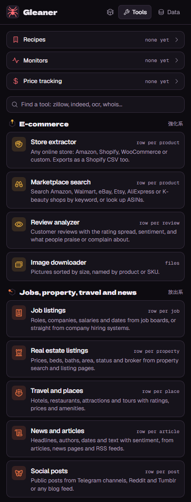
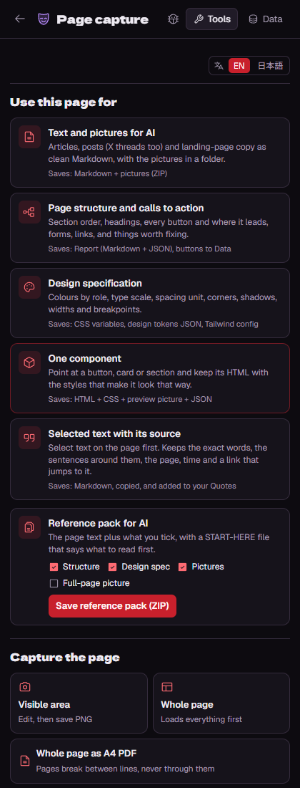
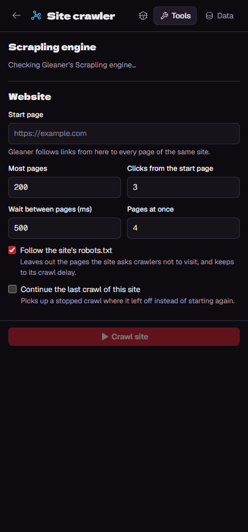

Install, use, update and remove Gleaner, the web scraper in your browser's side panel.
Gleaner-Setup ZIP, choose Extract All, then open the Gleaner-Setup folder. Running it from inside the ZIP doesn't work.Install Gleaner. A window opens and:
%LOCALAPPDATA%\Gleaner\extensionBrowsers only let a person add an extension that doesn't come from a web store, so steps 3 and 4 are clicks you make once. Edge or Chrome may mention "developer mode extensions" when it starts: that's normal.
Open a website, click the spider icon, and pick a tool. The first time a tool reads a page, the browser asks whether Gleaner may read websites: choose Allow. Everything runs on your computer; your data stays in the browser.



Results open in Data, where you can sort, search, edit and export them (CSV, Excel, JSON, Google Sheets-ready). Save a setup as a recipe to run it again, or a monitor to run it on a schedule.
Every tool has a short explanation at the top. If a run stops early or gives odd results, click Report a problem (the bug button): it saves one ZIP with what happened, a picture of the page and what Gleaner saw there. Look inside before you send it.
Open a video, open the Video downloader, pick the quality, audio (MP3) or subtitles. Files go to your Downloads folder. This uses yt-dlp through Gleaner's helper. For personal use only; protected (DRM) videos can't be saved.
Enter a start page and Gleaner crawls the site: every page's title, description, headings and links. It stays on the site, follows the site's robots.txt and waits between pages. Stop pauses it; tick Continue the last crawl of this site to carry on later. Scrapling also keeps your saved lists working when a shop changes its layout: the run tells you when it found a list again.
Gleaner reads pages with your browser's own identity and never disguises itself or solves CAPTCHAs. Sites that show a bot check are read in your own tabs, where you can solve the check yourself.
Gleaner-Setup ZIP and double-click Install Gleaner.Uninstall Gleaner in the setup folder. It removes Gleaner's files, its helper, the Scrapling environment and its saved crawl data, and the helper's browser registration.Node.js, Python, yt-dlp and ffmpeg stay installed, because other programs may use them. Remove them in Settings > Apps if you don't need them.
| What you see | What to do |
|---|---|
| "The 'extension' folder is missing" | Unzip the whole ZIP first (Extract All), then run Install Gleaner from the unzipped folder. |
| The Video downloader or Site crawler says the helper isn't set up | Run Install Gleaner again. If you moved Gleaner's folder, load it again with Load unpacked, then run the installer again. |
| The Site crawler offers "Install Scrapling" | Click it (about 100 MB, a few minutes). If it says Python is needed, run Install Gleaner again and say Y to Python. |
| A tool asks for permission every time | On the extensions page, open Gleaner's Details and set Site access to "On all sites". |
| A site shows "verify you are human" | Solve it in the open tab; Gleaner waits and carries on. |
| Anything else | Click Report a problem in Gleaner and send the ZIP it saves. |